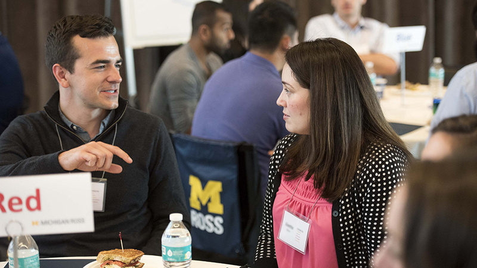

Prepare with Confidence
Interviews can feel stressful, but they’re also a chance to tell your story and show how you think. The resources below will help you practice clear answers, prepare examples, and feel more confident for behavioral, technical, and case-style interviews.

Key Resources
- Intro to Interviewing
- Pre-Interview Worksheet Links to an external site.
- AI Prompt Resource Guide: Interview Prep
- How to Talk About Course Projects in Interviews
Tip: If you want a structured way to practice, choose 2–3 common questions and rehearse using a timer. Then refine your examples and try again.
Interview FAQ
-
How do I answer “Tell me about yourself”?
Keep it short (about 60–90 seconds). Use a simple structure: present (who you are now) → past (relevant experience) → future (why this role). -
What’s the best way to answer behavioral questions?
Use STAR: Situation, Task, Action, Result. Focus on what you did and what changed because of it. -
How many examples should I prepare?
Aim for 5–7 stories that can flex across questions (teamwork, conflict, leadership, failure, initiative, and impact). -
What questions should I ask the interviewer?
Ask about the team’s priorities, success metrics, collaboration style, and what a great first 90 days looks like.
Common Interview Mistakes to Avoid
Strong candidates sometimes struggle in interviews for avoidable reasons. Before your next interview, check for these common pitfalls and adjust your preparation.
- Answering without structure: Rambling makes it harder to follow your impact. Use a clear framework like STAR or a 3-part summary.
- Too few concrete details: Replace vague claims (“I’m a strong leader”) with specific examples, tools, and outcomes.
- Not researching the role: Read the job description closely and connect your examples to the required skills.
- Speaking negatively about others: If you describe conflict, stay professional and focus on what you learned and how you moved forward.
- Skipping the closing: End by restating your interest and fit, and ask about next steps. A confident close helps you stand out.
After the interview, send a short thank-you note within 24 hours. Mention one specific part of the conversation to make it feel personal.